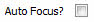
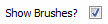
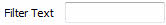

UDN
Search public documentation:
SceneManagerReferenceCH
English Translation
日本語訳
한국어
Interested in the Unreal Engine?
Visit the Unreal Technology site.
Looking for jobs and company info?
Check out the Epic games site.
Questions about support via UDN?
Contact the UDN Staff
日本語訳
한국어
Interested in the Unreal Engine?
Visit the Unreal Technology site.
Looking for jobs and company info?
Check out the Epic games site.
Questions about support via UDN?
Contact the UDN Staff
场景管理器参考指南
概述
打开场景管理器
场景管理器界面
菜单栏
视图
- Refresh（刷新） - 刷新 Actor 列表。
编辑
- Delete（删除） - 从当前关卡中删除选中的 Actor。
停靠状态
- Docked(停靠) - 这个选项将会把当前浮动的浏览器停靠到主浏览器窗口中。在当前的浏览器处于停靠状态时，这个选项将处于选种状态。
- Floating(浮动) - 这个选项将会取消停靠浏览器到主要浏览器窗口的停靠状态，使它在自己的窗口中变为浮动的浏览器。在当前的浏览器处于浮动状态时，这个选项处于选中状态。
- Clone Browser(克隆浏览器) - 这个选项将会创建一个当前浏览器的副本。
- Floating Browser（浮动浏览器） - 这个选项将会移除或删除当前的浏览器。这个选项进行在有克隆的浏览器窗口存在时才启用。
工具栏
沿着场景管理其上部的控制是用于修改 actor 表格中的内容以及聚焦选中的 actor。左边有一个组合框，其中列出了所有固定关卡和动态加载关卡。|  | 如果选中了“Auto Focus（自动聚焦）”复选框，在表格视图中选中一个 actor 将会导致主编辑器视口聚焦到选中的 actor 上。 |
 | 禁用“Auto Focus（自动聚焦）”后，它会手动将编辑器视窗聚焦在 actor 表格中选中的 actor。 |
| 它会手动刷新所有场景管理器面板。 | |
 | 删除所有选中的 actor。 |
 | 在组合框中选择一个 actor 类别，则 actor 表格中将仅显示那个类的 actor。 |
|  | 它可以控制是否在场景管理器中显示画刷 actor。 |
|  | 在这个字段中输入的文本将会使 actor 列表只显示那些名字里包含指定文本的 actor。 |